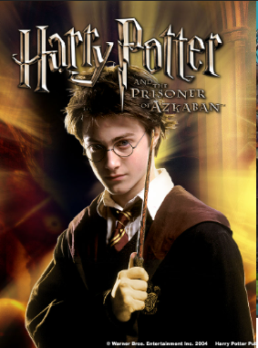

Harry Potter y el prisionero de Azkaban (2004)
Harry está deseando que termine el verano para comenzar un nuevo curso en Hogwarts,
y abandonar lo antes posible la casa de sus despreciables tíos, los Dursley. Lo que desconoce Harry es que va a tener que abandonar Privet Drive antes de tiempo e inesperadamente después de convertir a su tía Marge en un globo gigante. Un autobús noctámbulo, y encantado por supuesto, le llevará a la taberna El Caldero Chorreante,
donde le espera nada menos que Cornelius Fudge, el Ministro de Magia.